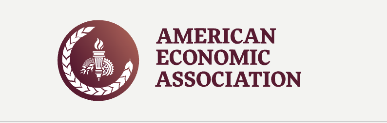

Visual storytelling
Make structural inequality easier to see.
Transform academic arguments into a public-facing digital experience.
Gender at Work
Modern workplaces often appear progressive through diversity policies, flexible work, and leadership programs. This digital intervention asks who actually has access to these systems — and who remains outside them.

The hidden reality
Precarious workers are often in insecure, casual, part-time, or unstable employment. They may have limited access to workplace communication, career progression, HR systems, and formal support.

Why it is gendered
Unpaid care responsibilities and expectations around flexible work push many women into insecure employment. Flexible work may exist in policy, but not always in practice.
Workplace equality initiatives often rely on HR systems, internal communication, and employer partnerships. These systems may unintentionally exclude the workers who are least connected to formal organisational structures.
We examined academic studies, feminist economic research, policy reports, and workplace equality literature to understand how precarious labour becomes gendered.
We identified a key gap: equality initiatives often appear inclusive, but their delivery depends on stable employer systems that precarious workers may not access.
We designed a communication-focused intervention using digital storytelling and infographic logic to make the issue more visible and accessible.


Grace Papers
Grace Papers supports workplace equality through coaching, flexible work, and organisational change. Our project identifies an accessibility gap in employer-based models: workers outside stable formal workplaces may be harder to reach.
Precarious work can produce stress, anxiety, instability, and emotional exhaustion. For many women, insecure paid labour exists alongside unpaid care responsibilities, creating a double burden of time and income pressure.
Intervention methods
Research Library
These sources informed our understanding of gendered precarious work, workplace inequality, mental health impacts, and the accessibility gap in formal workplace support systems.

Partner Context
Gender equality experts focusing on coaching, flexible work, parental transition, and organisational change.
Open source →
Workplace Data
Australian gender equality data, pay gap reporting, and workplace equality resources.
Open source →Flexible Work
Research on flexible work stigma and its connection to gender inequality and pay gaps.
Open source →
Labour Context
Broader Australian employment context for understanding labour insecurity and workforce participation.
Open source →
Economic Theory
Explains how labour markets reward long, continuous, and predictable working hours.
Open source →
Organisational Structures
Shows how workplace structures, processes, and decision-makers reproduce gender inequality.
Open source →
Mental Health
Longitudinal research on precarious employment and its mental health impacts.
Open source →
Workplace Support
Examines inequality in workplace support for precarious workers compared with permanent workers.
Open source →